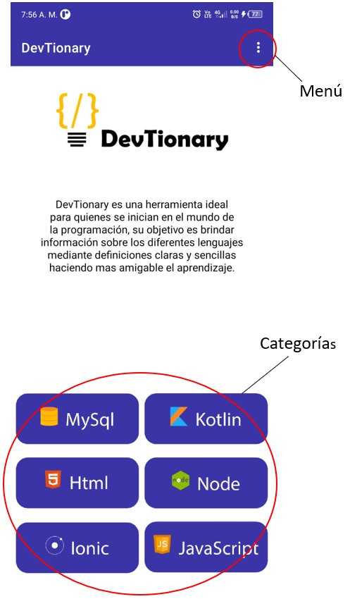
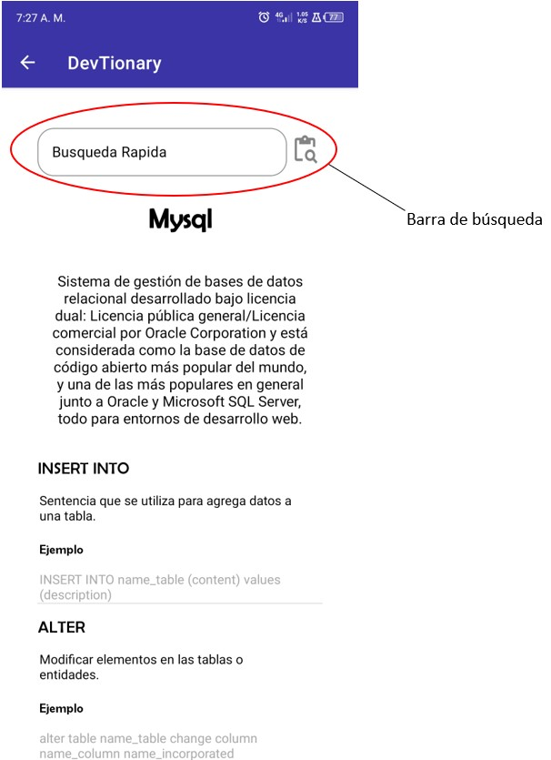
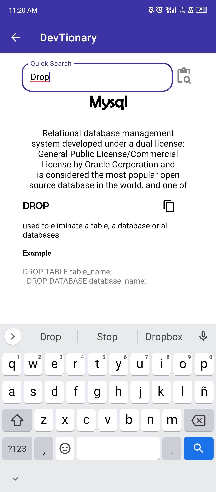

User manual.
User manual.
This manual aims to explain the DevTionary app step by step in a grammatical and visual way, where you will find programming labels and vocabulary with clear and simple definitions.
We hope that your experience reading this manual will be as comfortable as possible and clear all the doubts that arise when using this app.
Access to the app.
DevTionary (Developer Dictionary)
Mobile application designed for developers looking for terms in different programming languages (MySQL, Node, Kotiln, Html5, Ionic, javaScript) with a brief and clear description of how it works. The application is designed in two languages (Spanish and English), the language is determined depending on the phone's language settings.
Use of the app.
The application is identified by the icon shown in figure one, which must be previously installed on the mobile device. Figure two shows a brief animation (splash) which will direct you to the main screen.

Figure 1 DevTionary

Figure 2 Splash
On the main screen you can see the name of the application in the upper left part and in the right part the app menu as shown in image three, in the middle part of the screen you can see a brief description of the application and at the bottom you can see the different categories of programming languages that the application has by default (MYSQL, KOTLIN, NODE, HTML5, IONIC, JAVASCRIPT).

Figure 3 Main View
Figure four shows the menu with an icon of three points with three options, the first option is the information of the app developers, in the second option the user manual of the app is displayed and in the third option note the exit button of the app.

Figure 4 Brief view of the menu
When clicking on the first option (information) of the menu, a brief description about the developers of the app is observed, the second option (manual) of the menu shows the user manual of the application, as shown in the following figures.

Figure 5 Information Menu View

Figure 6 Information Menu View
When selecting a programming language, the system directs you to the category detail as shown in figure 7 where you can see a word search bar taking into account the words added to the dictionary, the application additionally shows a brief description of the word with its respective example, the icon

allows you to copy all the content of the searched word to be able to take it where it is necessary.
The search bar has the option to redisplay all words by deleting the text and pressing the search icon


Figure 7 Words and search
When performing a search for a specific word, the system will display the name of the word, the description and an example, as shown in the following figure.

Figure 8 View of the words with their example
Return